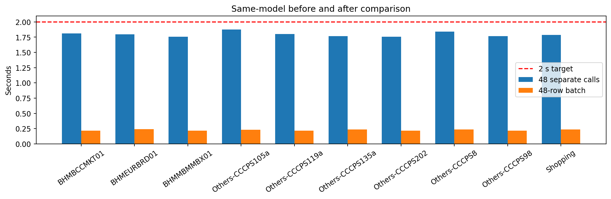
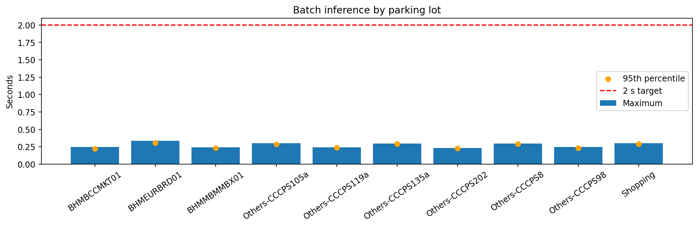
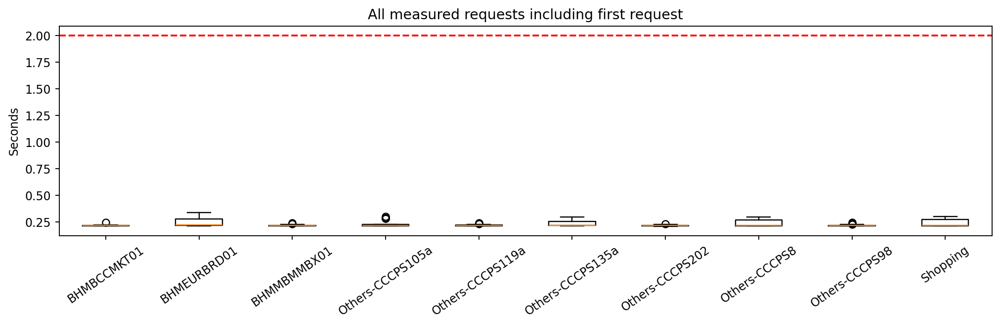
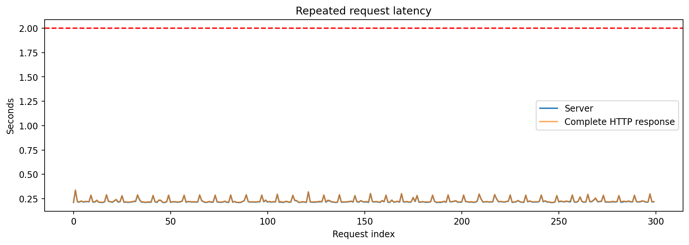
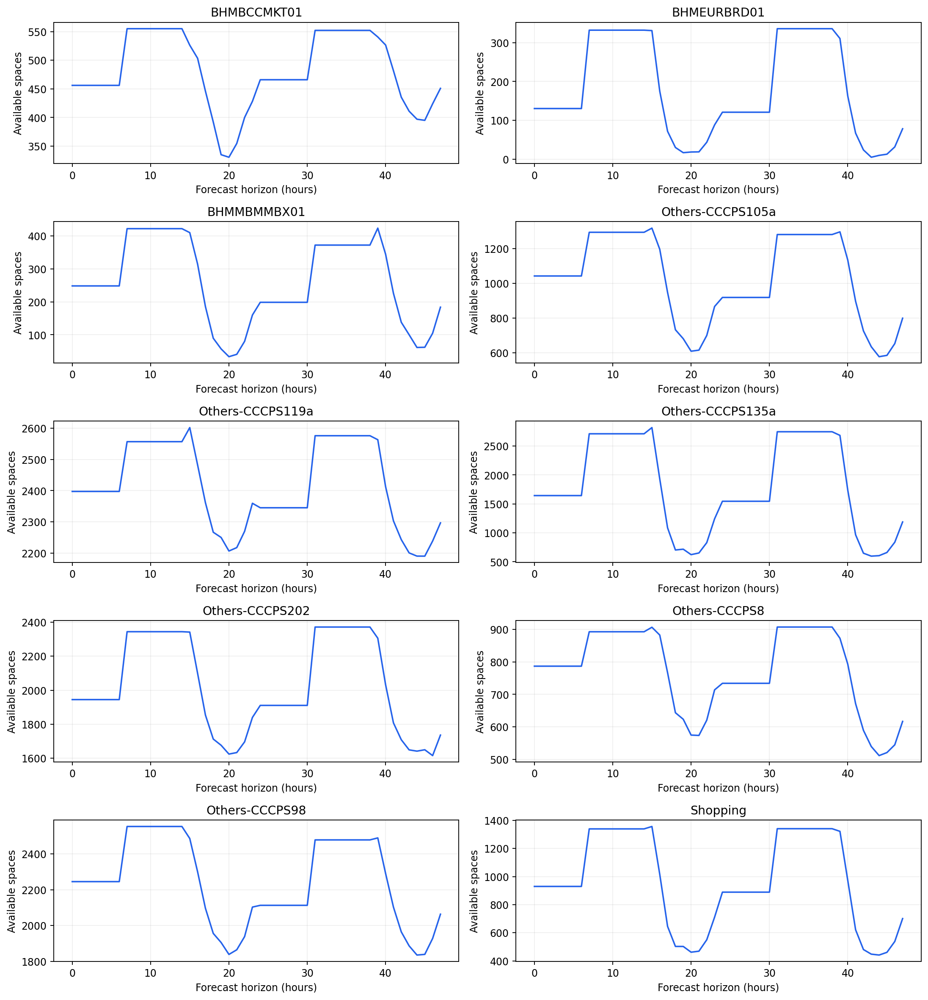
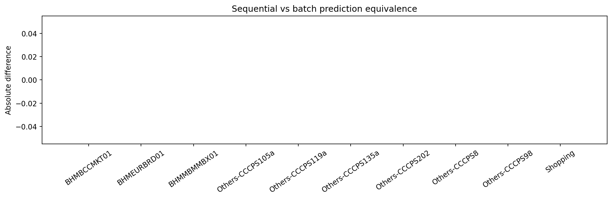
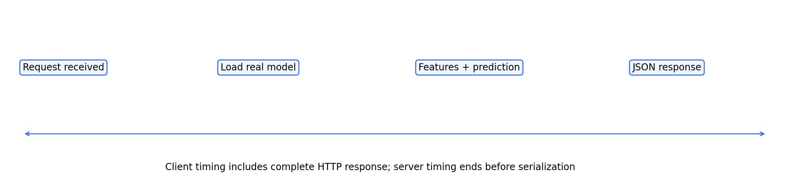
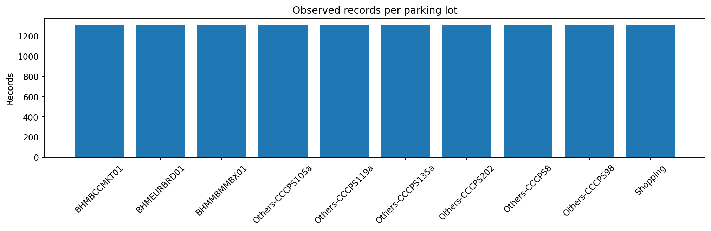
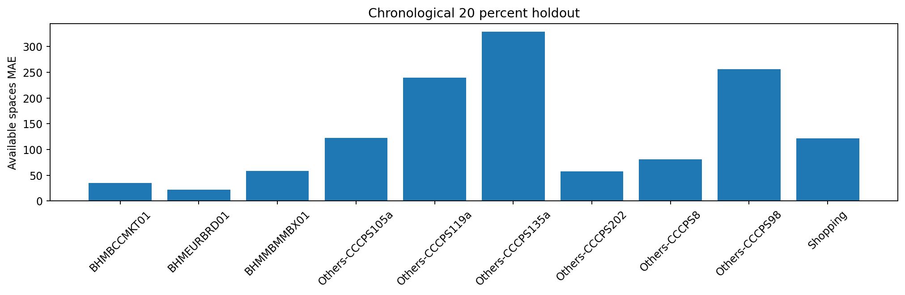
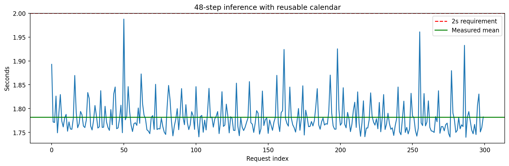

판정: PASS
4초에서 2초로 변경한 기준은 요구사항의 3차년도 및 5차년도 목표 차이이다. 실제 개선 효과는 동일 모델·입력 비교 측정으로 확인한다.
{
"requirement": "SNR-PER-016",
"threshold_seconds": 2.0,
"requests": 300,
"server_pass": true,
"client_pass": true,
"equivalence_pass": true,
"error_handling_pass": true,
"max_server_seconds": 0.336348434,
"p95_server_seconds": 0.28623262245,
"max_client_seconds": 0.339222234,
"server_over_2_seconds": 0,
"client_over_2_seconds": 0,
"measurement_scope": "single container loopback HTTP; models reloaded each request; startup excluded; first request retained",
"baseline_note": "same model/input, original-style 48 calls and per-call calendar construction; baseline repeat count may differ",
"overall_pass": true
}| count | mean_seconds | max_seconds | client_max_seconds | p95_seconds | baseline_mean_seconds | speedup_ratio | |
|---|---|---|---|---|---|---|---|
| measure_position_id | |||||||
| BHMBCCMKT01 | 30 | 0.217234 | 0.244417 | 0.247339 | 0.222435 | 1.811980 | 8.341139 |
| BHMEURBRD01 | 30 | 0.240053 | 0.336348 | 0.339222 | 0.303690 | 1.794530 | 7.475543 |
| BHMMBMMBX01 | 30 | 0.217913 | 0.240236 | 0.242977 | 0.229939 | 1.757570 | 8.065450 |
| Others-CCCPS105a | 30 | 0.233164 | 0.301496 | 0.304196 | 0.286525 | 1.874160 | 8.037949 |
| Others-CCCPS119a | 30 | 0.219131 | 0.239002 | 0.243439 | 0.234136 | 1.802964 | 8.227808 |
| Others-CCCPS135a | 30 | 0.234521 | 0.293711 | 0.296287 | 0.290357 | 1.769455 | 7.544979 |
| Others-CCCPS202 | 30 | 0.216688 | 0.230135 | 0.232931 | 0.224498 | 1.759468 | 8.119807 |
| Others-CCCPS8 | 30 | 0.234912 | 0.297434 | 0.299955 | 0.289208 | 1.840161 | 7.833400 |
| Others-CCCPS98 | 30 | 0.218252 | 0.245761 | 0.248366 | 0.232507 | 1.769117 | 8.105864 |
| Shopping | 30 | 0.237606 | 0.298985 | 0.302587 | 0.292584 | 1.786678 | 7.519498 |
{
"profile": "calendar_cached",
"requests": 300,
"mean_server_seconds": 1.7819216820033335,
"max_server_seconds": 1.987627674,
"p95_server_seconds": 1.8478060385,
"mean_client_seconds": 1.784751461173333,
"max_client_seconds": 1.992603077,
"over_2_seconds": 0,
"valid": true,
"all_server_within_2": true,
"all_client_within_2": true
}각 측정 원문은 responses 폴더, 파일 무결성은 manifest.json과 checksums.json에 기록한다. 본 결과는 같은 컨테이너 내 HTTP 측정이다.









